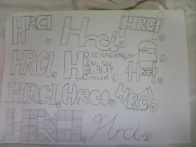
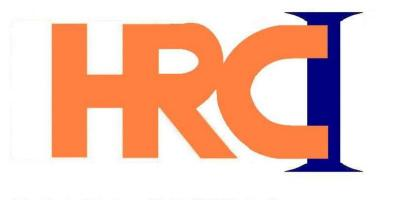
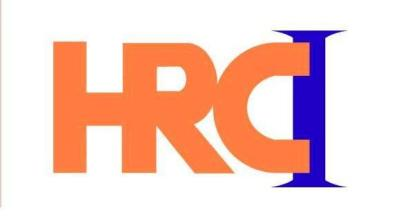

ロゴマーク製作秘話
別のページにもある通り、2008年１月に会の名称を「法政大学市ヶ谷鉄道研究会」に改名することになりました。 私はその際にロゴマークを作った会員なのですが、このロゴマークは何のソフトでデザインしたのかお分かりでしょうか？
実は・・・、ウィンドウズのアクセサリにある「ペイント」で製作しました。（笑）
ロゴの製作は2007年11月初旬にたま伝氏が「名称変更を機に会のロゴを作ろう」と提案し、その夜私はメモ帳に下の写真のようにペンで数通りでたらめに書きました。

次にこの中で適当にカッコよさそうなのを「ペイント」で製作しましたが、最初に出来たのは・・・
ご覧の通り四角形や三角形を集めただけでやや無機質でした。
その後、「『Ｈ』の右側と『Ｒ』の左側を重ねてみては」「『Ｉ』に『Ｃ』が引っかかるようにしたほうがカッコいい」
など会員の様々なアドバイスを受けて、数日後には・・・
こうなりぐんと洗練されました。しかし、「ペイントでも細かく曲線を書く方法」を知りました。
それは・・・「グリッドの表示」です。「ペイント」で400％以上拡大（200％だと出来ない）して「表示」コマンドの「拡大」のところにある「グリッドを表示」を選択します。
これによって細かい曲線（フォトショより格段に劣りますが）が描ける様になり、できたのが・・・

上の二つより明らかにロゴらしく洗練されたでしょう？
こうしてこれもロゴ案に出した結果、一ヵ月後これがロゴになりました。
最後にロゴ製作に協力＆アイデアを出してくださった他の会員の皆様どうもありがとうございました。
以下はホームページ管理人の文章です。実はこの話には後日談があります。
ロゴの完成から約半年後、別の会員が微修正してくれたのです。それがこれ。

不自然な点がなくなって、見栄えが増したと思います。前の部分で、最初の作成者の某氏が「明らかにロゴらしく洗練された」と言っているのは気にしないでください(^^;;)。